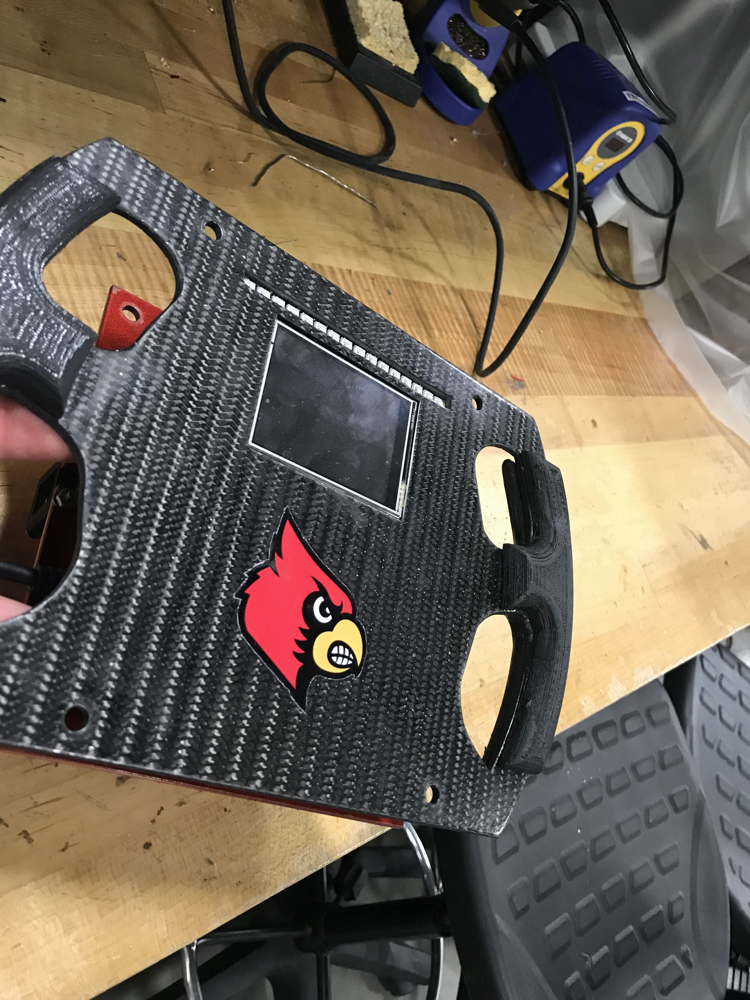

The team consists of engineering students of various disciplines with the goal of building a formula one race car for the annual FSAE competion in Lincoln, Nebraska. I became a member of Louisville's formula one team at the start of the spring semester in 2018. Almost every part of the car is designed and fabricated by students. We do all of our work at the Speed Engineering Garage and GE's FirstBuild. Making the car is a formative learning experience that has given me valuable experience about how to work in a sophisticated engineering team. Our team consists of smaller subteams for chassis, powertrain, aero, and electronics. I am a member and co-captain of the electronics subteam.
My responsibility is steering wheel design and programming. The steering wheel and paddle shifters were designed in solidworks and fabricated from steel and carbon fiber. The steering wheel was brought to life with an Arduino Uno R3. The steering wheel features an LCD display with outputs, LED rpm lights, and magnetic paddle shifters. All of the work on it can be found on my github repository.